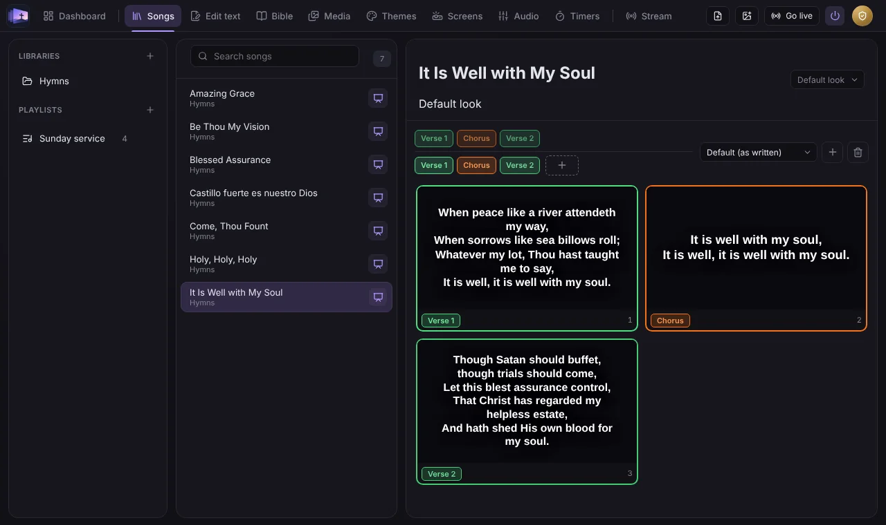

Songs, with their arrangements
Each song is split into verses, choruses and bridges, coloured by part. Put them in any order for this Sunday, keep several arrangements, and build the service's playlist. Import songs from text, or from other programs with import templates.
- One click shows a slide; arrows or a Stream Deck move along.
- The controls show what's on screen now and what comes next.
- Edit the words while presenting: what's live stays until you move on.
